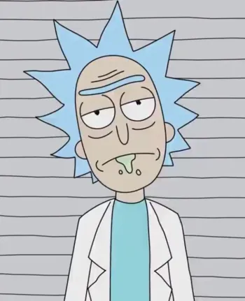

Rick and Morty (TV series)
Rick and Morty is an American adult animated television series created by Dan Harmon and Justin Roiland that premiered on December 2, 2013 on Cartoon Network's Adult Swim programming block.
The show's first season consists of 11 twenty-two minute episodes. After airing the first six episodes, Adult Swim renewed the show for a second season, consisting of 10 twenty-two minute episodes.
The show was based on a series of crudely animated short films for Channel 101 based on a Back to the Future parody The Real Animated Adventures of Doc and Mharti by Justin Roiland.
The Plot
After going missing for nearly 20 years, Rick Sanchez suddenly arrives at his daughter Beth’s doorstep looking to move in with her and her family. Beth welcomes him with open arms, but her unremarkable husband Jerry isn’t too thrilled about the tearful reunion as Rick’s arrival serves to shake things up quite a bit around the household. Rick converts the garage into his personal laboratory and gets to work on all sorts of dangerous sci-fi gadgets and contraptions. That wouldn’t be so bad if not for the fact that Rick continues to involve his grandchildren Morty and Summer in his insane adventures. With the exception of the Pilot episode, each episode ends with a post-credits scene
Characters

Rick Sanchez (Voiced by Justin Roiland) (Season 1 - Season 6) — A genius scientist and alcoholic whose inventions and experiments serve as the basis for the episodes. The grandfather of Morty Smith and Summer Smith, and the father of Beth. Rick was absent from the family for years, until he finally returned before the Pilot episode to live with the Smith family, much to the disapproval of Jerry. He currently resides in the garage of the Smith house where his entire laboratory is based. Here, he builds new inventions, travels to other dimensions, and tests things out on forms of alien life.
Morty Smith (Voiced by Justin Roiland) (Season 1 - Season 6) — Rick's impressionable and socially awkward teenage grandson who is often dragged along on his grandfather's escapades. Morty is a wimpy and nervous wreck who desperately tries to keep his sanity when taken on the bizarre and terrifyingly mind-bending adventures that Rick takes him on, which is already big enough of a problem as he already struggles to fit in at his own high school.
Jerry Smith (Voiced by Chris Parnell) — Morty's insecure father, whose disapproval of Rick's influence on Morty only deepens his marital troubles with Beth. Jerry constantly finds himself to be in a failing marriage with his wife as they always argue and never express the love for each other that most parents do.
Beth Smith (Voiced by Sarah Chalke) — Morty's holier-than-thou mother who is a cardiac surgeon for horses. Beth seems to have problems in her marriage with Jerry and usually considers leaving him for another guy.
Summer Smith (Voiced by Spencer Grammer) — Morty's angst-ridden older sister who occasionally joins Rick on his adventures. She only cares about her friends and social life at school and is easily annoyed by her family, though she sometimes becomes jealous of Morty's relationship with Rick.
Pickle Rick: An Absurd Adventure in Science
Third episode of the third seasonn
"Everyday is a new adventure." - Any science fiction fan on the planet. There's no arguing Rick and Morty's iconic animated show takes this phrase to an entirely new level.
Meet the Pickle
From afar, this story may sound like your average day, having a conversation with an inanimate object.
Or maybe not.
The conversation begins with Rick beckoning Morty to the garage, where he has seemingly transformed himself into a pickle, lying on the workbench. "Flip the pickle over," Rick mutters revealing, a surprise that would flabbergast any saneperson – Rick has indeed transformed himself into a pickle.
"I turned myself into a pickle Morty. Boom. Big reveal. I’m a pickle. What do you think about that?"
Exactly, what does one think about a close figure transforming himself into a vegetable? Not every day's kitchen conversation.
Well, an interesting phenomenon indeed. Morty, and later Beth and Summer, question the "pickled" scientist. Is it a magic trick? Is he going to live forever in that form? Can he fly?
In typical Rick fashion, all questions are met with snide remarks and conceited responses.
"I don’t do magic, Morty. I do science. One takes brains, the other takes dark eyeliner."
An Ambition... Too Far?
Beth and Summer, get swept up in the absurdity of the situation and leave Rick in his pickle form for their pre-scheduled family counseling appointment. Morty, however, expresses suspicion, suggesting that the transformation into a pickle is an elaborate plan by Rick to escape family therapy.
Rick does very little to refute Morty’s accusation, rather he amuses his family (and the audience) with sarcastic statements and well-timed jests.
"Can’t you just turn yourself back into a human?"
"Great question, Summer. The unfortunate answer is I did this to challenge myself. It could take hours or even days before I’m able to figure out how to return to human form."
As the family leaves, Morty spots a syringe dripping with a mysterious fluid hanging directly over pickle Rick, attached to a timer set for ten minutes from then. Rick's response? Classic denial and dismissal.
"Well, Morty, if you must know, the syringe is completely unrelated to this discussion and therefore does not warrant further explanation."
A Pickle's Tale
While the family debates over therapies, Rick –the pickle– has his encounter with the household cat. The cat mistakes Rick for a cucumber, playing into the popular YouTube trend showing cats being scared of cucumbers due to their resemblance to snakes. Through a series of exasperated cries, reminding the cat - and the viewer - of his “pickly" state.
"Whoa whoa whoa, Izzy. I’m not a snake! I’m a pickle. I’m a pickle!"
Science, absurdity, and a pickle. Rick and Morty consistently weave together tales that not only stretch the mind but keep you rolling with laughter. A man turning himself into a pickle may seem ludicrous but under the spotlight of an interdimensional mad scientist, it's a distinct possibility. No matter the absurdity, one thing's for sure - you will always be entertained.
Stay tuned, something tells us more outlandish Rick and Morty antics are coming your way!
Dialog
Underneath is a dialog between Morty, Rick, Beth, and Summer.
In groups of 4, read through the dialog and look up words you are uncertain of what means. Practice pronunciation, intonation, and pitch in the dialog.
When you are ready, perform the dialog and record it.
The dialog
Rick, are you far away, or are you inside something? Is this a camera? Is everything a camera?
Morty. The garage, Morty. Come to the garage...
- on my workbench, Morty?
Are you invisible and you're gonna, like, fart on me?
What? I'm going to touch it, and you're going to tell me it's an alien dick or something?
Come on. Flip the pickle, Morty. You're not going to regret it. The payoff is huge. I turned myself into a pickle, Morty. Boom. Big reveal. I'm a pickle. What do you think about that? I turned myself into a pickle. What are you just staring at me for, bro? I turned myself into a pickle, Morty.
And what, Morty? What more do you want tacked onto this? I turned myself into a pickle and 9-11 was an inside job.
Who cares, Morty? Global acts of terrorism happen every day. Uh here's something that's never happened before. I'm a pickle. I'm pickle Riiiiick!
Is this the first part of some kind of magic trick?
I don't do magic, Morty. I do science. One takes brains. The other takes dark eyeliner.
Well, can you move? Can you fly?
Wouldn't be much of a pickle if I could.
All right, well, do pickles live forever or?
Morty, stop digging for hidden layers and just be impressed. I'm a pickle.
I'm just trying to figure out why you would do this, why anyone would do this.
The reason anyone would do this, if they could, which they can't, would be because they could, which they can't.
Morty, we have to get going or we're gonna be late. Where's your grandpa?
Right here, sweetie. I'm a pickle.
What? Why would you, look, we're running late. We have to go.
Where are you guys going?
We have an appointment downtown that was set a week ago and agreed upon by everyone, including you.
Oh, my God. Beth. Oh, it totally slipped my mind. Geez. Oh, man. I'm a pickle. I mean, I don't know if I can
Rick? did you do this on purpose to get out of family counseling?
It's okay, Beth. I understand Morty's suspicion. I've misled him before. Morty, turn me so we're making eye contact. Morty, I assure you I would never find a way to get out of family therapy. I hope my lack of fingers doesn't prevent the perception of my air quotes.
Can't you just turn yourself back into a human?
Great question, Summer. The unfortunate answer is I did this to challenge myself, and it could take hours or even days before I'm able to figure out how to return to human, but, I mean, you know, your mom could put me in a purse or a pocket know, if she really needs me to go.
Nobody needs anything, okay? It's fine. You should just stay here and figure out how to stop being a pickle, okay?
Hey, Rick, why is there a syringe of mysterious fluid hanging directly over you. Also, why is the string attached to it running through a pair of scissors attached to a timer? And why is the timer set to ten minutes from now, exactly when we would have left for therapy?
Well, MoRtY, if you must know, the syringe is completely unrelated to this discussion and therefore does not warrant further explanation.
Enough, kids, it's time to go. We don't want to be late.
What are you doing there, Beth? What are you doing there, sweetie?
Well, I mean, you don't want to get pierced by a needle full of liquid unrelated to your situation. How's that going to help?
Great. We'll see you later.
Hey, be careful with that. It's for something else that's really important, so don't break it.
Okay.. I may have f***ed up here!
Now, in class, listen to the dialog below: